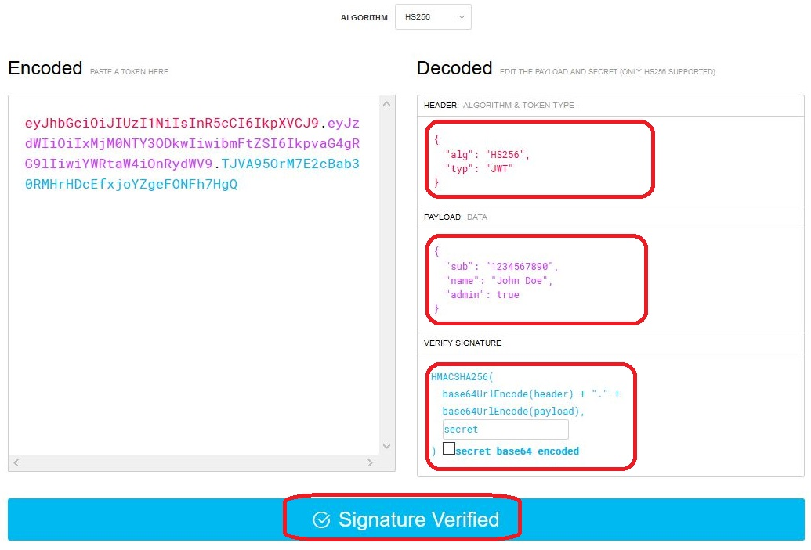

JWT (JSON Web Token)
Els mecanismes d'autenticació tradicional en aplicacions web estan basats en sessions: l'usuari envia les seues credencials a través d'algun formulari, el servidor les valida i emmagatzema en la sessió les dades de l'usuari, perquè, mentre no caduque la sessió o la tanque l'usuari, puga seguir accedint sense haver de tornar a autenticar-se.
No obstant això, aquest tipus d'autenticació té la limitació de ser exclusiva per a aplicacions web, és a dir, per a clients web que es connecten a servidors web. Si volguérem adaptar l'aplicació a mòbil, o a una versió d'escriptori, no podríem seguir emprant aquest mecanisme.
Per a superar aquest escull, podem utilitzar l'autenticació basada en tokens. Aquesta és una autenticació "sense estat" (stateless), la qual cosa significa que no s'emmagatzema res entre client i servidor per a seguir accedint autenticats. El que es fa és el següent:
- El client envia al servidor les seues credencials (usuari i contrasenya)
- El servidor les valida, i si són correctes, genera una cadena xifrada anomenada token, que conté la validació de l'usuari, a més de certa informació addicional que puguem voler afegir (com el nom d'usuari, per exemple). Aquest token s'envia de tornada a l'usuari com a resposta a la seua autenticació.
- A partir d'aquest punt, cada vegada que el client vullga autenticar-se contra el servidor per a sol·licitar un recurs, n'hi ha prou en que envie el token que el servidor li va proporcionar. El servidor s'encarregarà de verificar-lo per a comprovar que és correcte, i donar-li accés o denegar-li'l.
Igual que les sessions, els tokens també poden tenir una caducitat, que s'indica dins del propi token. Si, passat aqueix temps, el servidor rep el token, ho descartarà com a invàlid (caducat), i el client tornarà a no estar autenticat.
JSON Web Token és un estàndard obert (RFC 7519) que defineix un mode compacte i autònom de transmetre de forma segura la informació entre dues parts com un objecte JSON. Aquesta informació pot ser verificada i és fiable perquè està signada digitalment.
Els JWT es poden signar usant un secret (amb l'algoritme HMAC) o utilitzant un parell de claus públiques/privades usant RSA i contenen la informació de l'usuari autenticat.
Estructura del token

Cicle de vida del token JWT

Implementació en Symfony
Per a poder treballar amb JWT en Symfony, podem emprar (entre
altres) el bundle lexik/LexikJWTAuthenticationBundle, que s'instal·la
d'aquesta manera:
composer require jwt-auth
composer require security
Entitat User
Caldrà disposar d'una entitat que implemente la interfície UserInterface que ja tenim del projecte anterior.
Endpoints
Usarem un endpoint:
/loginserà la que validarà les credencials.
Generació de certificats
Per a poder codificar els tokens, és necessari generar un parell de certificats.
Generarem un privat per a generar el token quan l'usuari es valide, i un públic per a poder-lo validar quan l'usuari l'envie.
Per a açò, executem la següent ordre des del directori arrel del projecte.
php bin/console lexik:jwt:generate-keypair
Amb aquesta ordre es crearà una clau privada,
i una pública a partir de la privada. Aquestes claus requeriran una contrasenya
que es genera automàticament i es troba en el fitxer .env, en la clau JWT_PASSPHRASE.
En el fitxer .env s'hauran creat estes línies:
JWT_SECRET_KEY=%kernel.project_dir%/config/jwt/private.pem
JWT_PUBLIC_KEY=%kernel.project_dir%/config/jwt/public.pem
JWT_PASSPHRASE=14ea51a657fac12644ab2653d8933644
I en el fitxer de configuració config/packages/lexik_authentication.yaml estes:
lexik_jwt_authentication:
secret_key: '%env(resolve:JWT_SECRET_KEY)%' # required for token creation
public_key: '%env(resolve:JWT_PUBLIC_KEY)%' # required for token verification
pass_phrase: '%env(JWT_PASSPHRASE)%' # required for token creation
Configuració de config/packages/security.yaml
L'arxiu principal de seguretat config/packages/security.yaml haurà de
contenir aquests atributs per a l'autenticació per token:
# config/packages/security.yaml
security:
# https://symfony.com/doc/current/security.html#c-hashing-passwords
password_hashers:
App\Entity\User: 'auto'
# https://symfony.com/doc/current/security/authenticator_manager.html
enable_authenticator_manager: true
# https://symfony.com/doc/current/security.html#where-do-users-come-from-user-providers
providers:
# used to reload user from session & other features (e.g. switch_user)
users:
entity:
class: App\Entity\User
property: username
firewalls:
dev:
pattern: ^/_(profiler|wdt)
security: false
api:
pattern: ^/api/
stateless: true
provider: users
jwt: ~
main:
json_login:
check_path: login # The name in routes.yaml is enough for mapping
username_path: username
password_path: password
success_handler: lexik_jwt_authentication.handler.authentication_success
failure_handler: lexik_jwt_authentication.handler.authentication_failure
access_control:
- { path: ^/$, roles: PUBLIC_ACCESS } # Allows accessing the Swagger UI
- { path: ^/login, roles: PUBLIC_ACCESS } # Allows accessing login controller
- { path: ^/api$, roles: PUBLIC_ACCESS } # Allows accessing the doc
- { path: ^/, roles: IS_AUTHENTICATED_FULLY } # Forces authentication in all the requests
Caldrà afegir també la següent ruta en config/routes.yaml:
login:
path: /login
El que hem definit en aquest fitxer és:
- El firewall
mainque s'activarà en accedir a la ruta/login. Ruta que serà pública, com s'observa enaccess_control. json_loginindica que s'espera una sol·licitud via JSON.- El firewall
apis'activarà en la resta de rutes de la API, on s'indicarà que cap aplicar l'autenticació jwt. jwt: ~activa l'autenticador JWT.
Provant l'autenticació
Per a provar que l'autenticació funciona, crearem una nova petició
POST en Postman a la URI /login, i li passem en el cos de
la petició l'usuari (username) i la contrasenya (password). En aquest
exemple, suposem que l'usuari és user i la contrasenya (sense
encriptar) és user. Haurem d'afegir també una capçalera (Header) amb
l'atribut ContentType establit a application/json.
Tests
Seria interessant crear un test que a més ens permetrà provar el control d'accés.
Si tot va correctament, rebrem com a resposta un token:

Si analitzem el token obtindrem:

La signatura és invàlida ja que no s'ha pogut verificar amb les claus pública i privada.
Provant l'autorització
Ara, obtindrem un llistat de tweets. Si llancem la petició en Postman (o en el test) sense cap tipus d'autorització, rebrem aquest missatge:
{
"code": 401,
"message": "JWT Token not found"
}
Hem d'afegir una capçalera Authorization el valor de la qual siga el
prefix "Bearer " (incloent l'espai final) seguit del token que ens ha
enviat el servidor en autenticar-nos:

D'aquesta forma sí que obtindrem el llistat de tweets. Haurem de procedir
de la mateixa forma (enviant el token en la capçalera Authorization) per a
poder emprar la resta de sol·licituds.
Activar l'autorització des de la documentació
Primerament vincularem el sistema d'autenticació afegint:
# config/packages/api_platform.yaml
api_platform:
swagger:
api_keys:
JWT:
name: Authorization
type: header
Després, per poder provar l'autenticació, afegirem en lexik_jwt_authentication.yaml:
api_platform:
check_path: /login
username_path: username
password_path: password
Una vegada obtingut el token caldrà afegir-lo a la capçalera des del botó [Authorize],
introduint el text: Bearer NEW_TOKEN. Canviant NEW_TOKEN pel token obtingut.
Recursos
- JWT Authentication en API Platform
- Security en API Platform
- https://jwt.io/
- Functional Testing with JWT Authentication Bundle
- LexikJWTAuthenticationBundle
- https://enmilocalfunciona.io/construyendo-una-web-api-rest-segura-con-json-web-token-en-net-parte-i/
- https://www.adictosaltrabajo.com/2017/09/25/securizar-un-api-rest-utilizando-json-web-tokens/
- https://developer.mozilla.org/en-US/docs/Web/HTTP/CORS